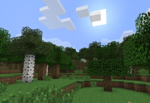
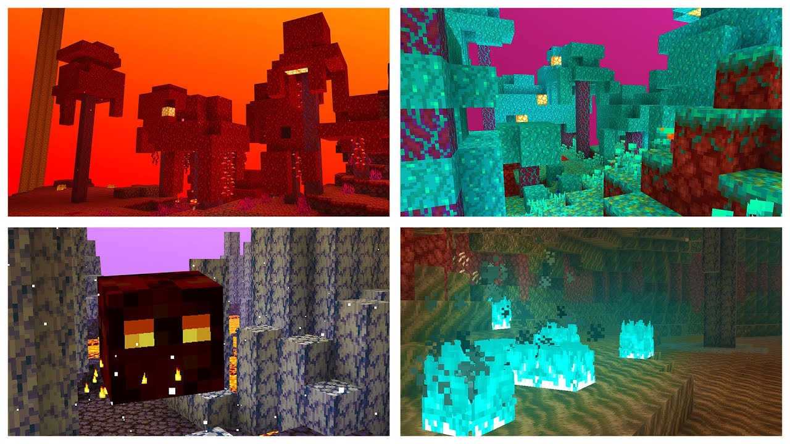

Tipi di Biomi
I biomi sono regioni con caratteristiche climatiche e ambientali uniche, che influenzano flora, fauna e risorse.
Biomi Comuni
- Foresta: Ricca di alberi, animali e risorse legnose.
- Deserto: Area asciutta con sabbia, cactacee e templi nascosti.
- Prateria: Spazio aperto con erba alta e fiori, spesso con cavalli e mucche.


Biomi Speciali
- Tundra: Gelida con neve e ghiaccio.
- Giungla: Alberi altissimi, liane e felci, con ocelot e panda.
- Palude: Acqua stagnante, alghe e mob particolari.
Dimensioni e Biomi Estremi
- Nether: Bioma infernale con lava, mob ostili e risorse uniche.
- End: Bioma finale dove si trova l’Ender Dragon.
- Montagne: Alture con blocchi di neve, minerali e panorami.
